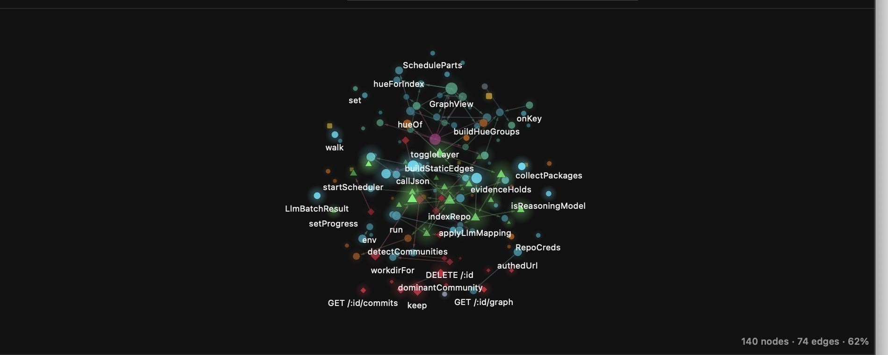
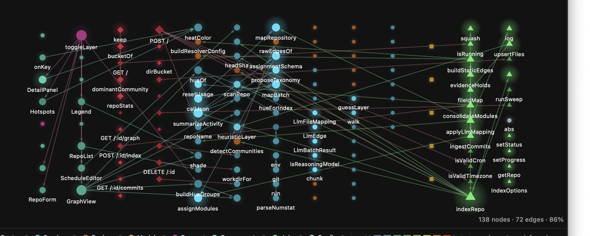
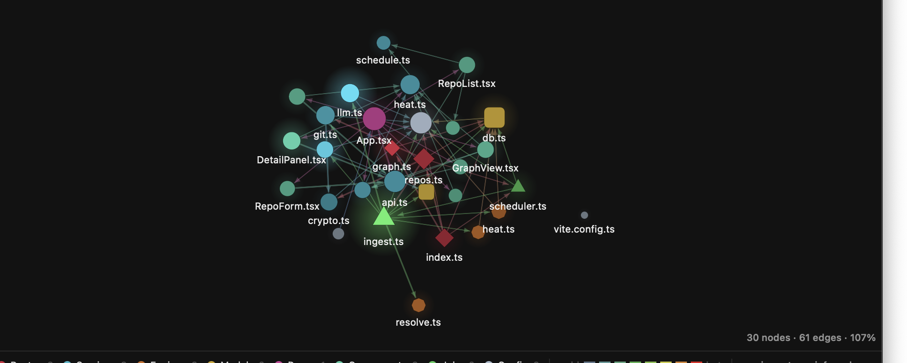
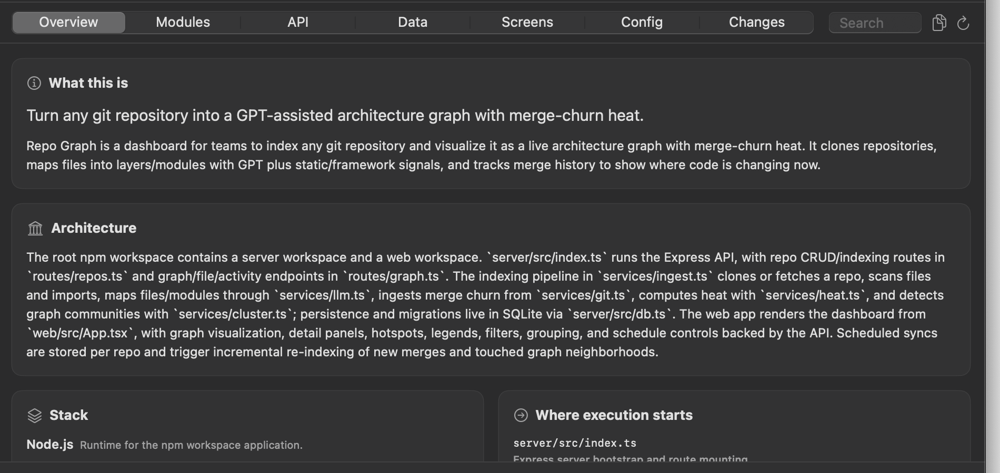

RepoDeck watches the repos your team works on. It pulls on a schedule or within the hour a pull request merges, resolves the merge, redeploys your app locally, and keeps a knowledge graph of the codebase that your Claude agents can read.
macOS 14+ · Node.js 22.5+ · free and open source
curl -fsSL https://raw.githubusercontent.com/XPro-Gamer-Rhine/RepoDeck/main/install.sh | bash
Most of what a team loses to repository drift is attention: noticing a merge landed, remembering to pull, working out what changed, restarting the thing that broke. RepoDeck takes all four.
Per-repo schedules in your timezone, plus a watcher that asks GitHub each hour whether a pull request merged. Every pull fetches first. The clone is treated as a mirror, so a reset cannot lose work — and the moment it does hold local commits, RepoDeck upgrades to a real merge instead of discarding them.
RepoDeck works out how your repo starts — npm scripts, Docker Compose, Procfile,
Makefile, manage.py, artisan, Go, Cargo — and shows you the exact
commands before running anything. After that, a merge on the default branch restarts
the process on the new code, reinstalling only when a lock file actually moved.
Not a summary — a knowledge graph. Traced request paths, function contracts, an error catalogue, and debugging playbooks keyed by symptom. Export it and point a Claude Code subagent at it.
Every merge gets a digest written from its commits and its diff — not from the commit subjects. What changed, what is new, what got fixed, what breaks, and the two or three files actually worth opening.
Response rendering now accepts caller-supplied payload fields medium risk The render helper now takes an optional extra object and merges its fields into the JSON response alongside ok and version. It validates that extra is an object when provided, so invalid callers get an explicit error. NEW Callers can pass an optional object to render(version, extra) BREAKING Extra fields are spread after the default { ok, version } payload, so callers can override ok or version by passing those keys OPEN render.js · version.json
That breaking change is not in any commit message. It was read out of the diff.
Two things are encoded at once. Hue is what a node is — routes red, services cyan, engines orange, models yellow, jobs green. Brightness and glow are how often it changes, from time-decayed merge churn, so the parts of the codebase currently in motion light up.



Pick what one dot means: every file, folders, feature modules, or functions —
the view that answers “where does POST /repos actually go?”. In the function
view a node is a handler, function, class or component, and an edge is a call, with the
line it happens on.
Built during indexing and refreshed on every pull. Half of it is derived —
traced out of the call graph and the source, so every path:line is checkable.
Only the prose is written by a model, and it is written against that derived material.
| flows.md | Where a request goes, hop by hop. Every step is a real call on a real line. |
|---|---|
| playbooks.md | Symptom → likely cause → which files to open in which order → what a correct fix looks like → how to verify it. |
| functions.md | Per function: purpose, return shape, what it changes outside itself, how it fails, what it assumes. |
| errors.md | Every failure the code can raise, the line that raises it, and what to check when you see it. |
| api-surface.md | Every endpoint, its handler, its middleware chain, the payload it expects, the shape it returns. |
| agents/<module>.md | A drop-in Claude Code subagent per feature area, carrying that module’s flows, contracts, errors and invariants. |
| call-graph.json | Every function and every call between them, machine-readable, with line numbers. |

Two ways in. The one-liner is recommended — it also handles the quarantine flag for you.
curl -fsSL https://raw.githubusercontent.com/XPro-Gamer-Rhine/RepoDeck/main/install.sh | bash
Builds from source, installs to /Applications, clears the quarantine flag, and launches.
Re-run any time to update.
Drag RepoDeck across, then double-click Remove quarantine.command once.
xattr -dr com.apple.quarantine /Applications/RepoDeck.app
Three ways in: borrow the token from a gh auth login that already happened on
this Mac, sign in on github.com with a device code, or paste a personal access token.
Tokens go in the macOS Keychain — RepoDeck’s database stores only a reference to them.
A Claude or OpenAI key, or point it at a local endpoint — Ollama, LM Studio, vLLM, anything that speaks the OpenAI API. Each repo can use a different one. Without a model you still get the file graph, real import edges, clusters and the heatmap.
SSH or HTTPS, or pick one from your account. RepoDeck reads the remote first, so the branch picker has real data in it before anything is cloned.
A SwiftUI app and a Node engine, talking JSON-RPC over stdio. The engine owns the cron tasks, the pull-request watchers and the dev servers RepoDeck supervises — all of which have to outlive any one screen.
┌──────────────── RepoDeck.app ────────────────┐
│ SwiftUI window · menubar status │
│ native Canvas graph, 2D and 3D │
└───────────────┬──────────────────────────────┘
│ JSON-RPC / NDJSON over stdio
┌───────────────▼──────────────────────────────┐
│ node engine · one process, many repos │
│ git · GitHub · scan+resolve · call graph │
│ Louvain · heat · knowledge graph · deploy │
│ per-repo cron + pull-request watchers │
└──────────────────────────────────────────────┘
| Credentials | Live in the macOS Keychain and reach the engine over its stdin pipe. Never in the database, never on a command line — a copy of the sqlite file is worthless. |
|---|---|
| Destructive pulls | A reset only ever runs on a tree RepoDeck itself filled. Local work upgrades the pull to a merge automatically. |
| Running your code | Nothing executes until you have seen the exact command. Deploy profiles are proposed, printed, then approved. |
| Graph edges | Model-inferred edges must quote a line from the source, and the quote is checked against the file before the edge is kept. |